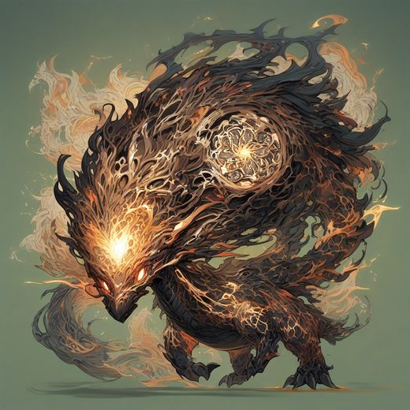

dragon-c - fiercest face, molten chest core (the core motif was grafted into the canon design). A bust with no lower body, so locomotion rows would be invented.

dragon-a - most intricate render, boss-monster proportions. The filigree detail turns to noise at 192px pet size.